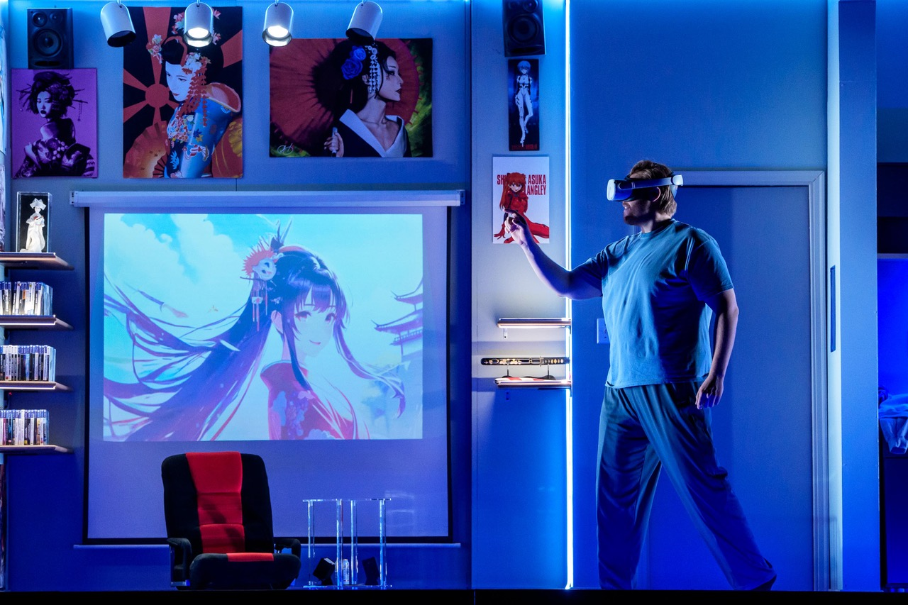
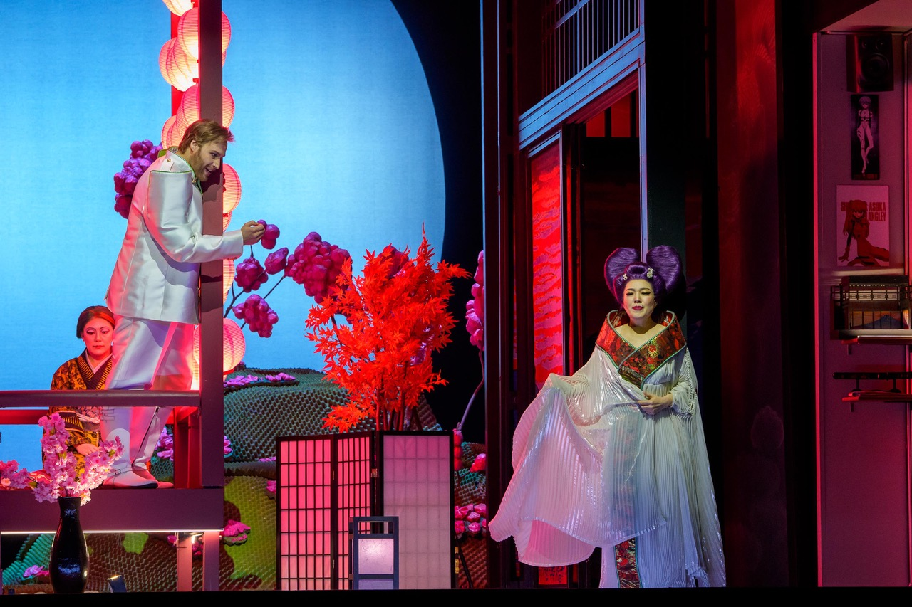

Lyric Opera of Chicago audiences are currently swept away by Matthew Ozawa's current production of Madama Butterfly, Puccini's heartbreaking tale of Cio-Cio San, the doomed geisha in love with B.F. Pinkerton who will break her heart and ruin her life. The virtual reality glasses that Pinkerton picks up to enter the opera as a gaming opportunity transform the conversations of audiences for days after viewing, with memories of the soaring voices, familiar melodies, gorgeous costumes, and glorious sets mingling with questions about how far technology and AI can go.
Ozawa, Chief Artistic Administration Officer of the Lyric as well as Director of Madama Butterfly, told us:
“I first had the idea of using virtual reality in 2021. I wanted Pinkerton to be so fully immersed in playing the game that it would be his entry into the fantasy world which he would become a participant. When the Cincinnati Opera first performed our version in 2023 it was very much about the liberation of Asian women and women in general, now people are talking as well about Pinkerton as a product of his relationship to technology, how his need to escape into virtual reality can be seen as a symptom of current society. As AI has become zeitgeist the opera has become even more prescient about how fantasy is managing people’s lives, whether it is chatGPT bots or dark messages that encourage suicide. Pinkerton really believes that he is interacting with these women, his whole life has blurred with fantasy.
“When we first started developing the idea, it was mainly young people who knew about virtual reality. We incorporated joy sticks, now gone, because that’s what you used at the time. People sometimes asked: what is that person doing as he stumbled over furniture or ran into a wall?”

Richard Shepro, a member of the Lyric Opera Board of Directors who with his wife Lindsay Roberts have followed Ozawa’s meteoric career for several years, told us:
“We made a trip to Detroit in 2023 to see Matthew’s production and love the approach he and his team had taken. The idea was brilliant but wouldn’t have worked without the incredible attention to detail in the sets, lighting and the often really subtle movements of the actors. We appreciate it even more now after seeing it twice on the bigger Lyric stage, with many nuanced refinements in the sets, the props, the costumes—and especially the portrayal of Pinkerton that makes it clearer when he’s a real participant and when a VR observer. It’s a thrill to see it!”
As the opera begins, we see Pinkerton pop a beer against a backdrop of prints featuring anime women and traditional geisha. The eye-popping lime greens and purples in palettes of Mario Brothers and more jarring games appear when he dons the VR glasses.
Ozawa describes:
“Cio-Cio-San’s elaborate wig is a deep purple, neon green is found in other character’s clothes, cut in sharp angles, and brushed through their hair. The idea is that the virtual reality image would create a design reminiscent to the actual clothing and lighting in the physical world. But my idea is that it would be a fantasy, thus removing the appropriation of the Japanese sometimes interpreted in traditional versions. The colors are bold and bombastic: red for Japan, blue for the United States and the yellow which was once seen in facial coloring of the Japanese and represented the appropriation.
“The grass is lime green, the flowers very pink. From the balcony audiences see the cherry blossom petals almost covering the stage—very much like a Willy Wonka scene. It is meant to be very suffocating.”
This is Ozawa’s fourth season with the Lyric. A multidisciplined stage director, artistic director and educator, Ozawa recently directed Parsifal for the San Francisco Opera and Romeo and Juliet in his eighth revival.
Ozawa has written for Lyric Opera notes about his Madama Butterfly:
“As we allow ourselves to become immersed in the fantasy of Japan portrayed in Puccini’s Madama Butterfly, it’s illuminating to consider through whose lens we are viewing this opera. What experiences, perspectives, histories, and biases do we bring with us as we engage with Butterfly’s story?
“When I investigate my own lens, I see that mine represents the East-West conflict that is core to Madama Butterfly. I am biracial—the son of a Caucasian mother and a Japanese father. I am an American whose family was interned during World War II. I grew up in Asia but spent holidays in California. I have spent most of my professional life devoted to the Western art form of opera, though I am often one of the only artists of color in the spaces where I work. I have loved Western classical music as much as I have loved Eastern art forms. Like Butterfly, I have yearned for acceptance but never felt truly at home in any single culture or place.
“Just as Cio-Cio-San is trapped with little agency in the opera, we as Asian Americans have been trapped by many of the traditional depictions of Butterfly’s story. We seek now to release this opera’s wings for all to experience anew. To do this, we own that the fantasy of Butterfly that we have come to love is a Western fantasy. Instead of pretending that Butterfly is representative of our Japanese American identity, our production aims to amplify that her story has been seen through the lens of a white man, Pinkerton.
“For me, Madama Butterfly is an opera I have spent 20 years studying and directing. I have deep love for this work, but it has simultaneously made me, as an Asian American, feel ostracized, and I have felt a duty to reclaim its narrative. With this new production, we aim to acknowledge that there are many ways to view this opera. Our hope is that this journey enables our empathy to be open to the impact we have on each other, and the need for a more compassionate understanding of perspectives outside our own. May the voyage into this production’s fantasy capture your senses, sweep you up in the music’s emotional power, and awaken your own lens.”

What is next on Ozawa’s creative calendar?
“I am not directing next season, but further out. The work can be taxing but is a true labor of love. I find it incredibly heartwarming that so many young people are seeing Madama Butterfly and the diversity of new operaphiles is growing. I hear many championing the empowerment of women at the end of the show. Art is supposed to be a mirror to society and everyone who is a part of this Lyric performance, the artisans, crew and singers show their dedication. Such an ensemble to have fleshed out the idea.”
For more information about Matthew Ozawa’s production and the Lyric Opera of Chicago, visit lyricopera.org.